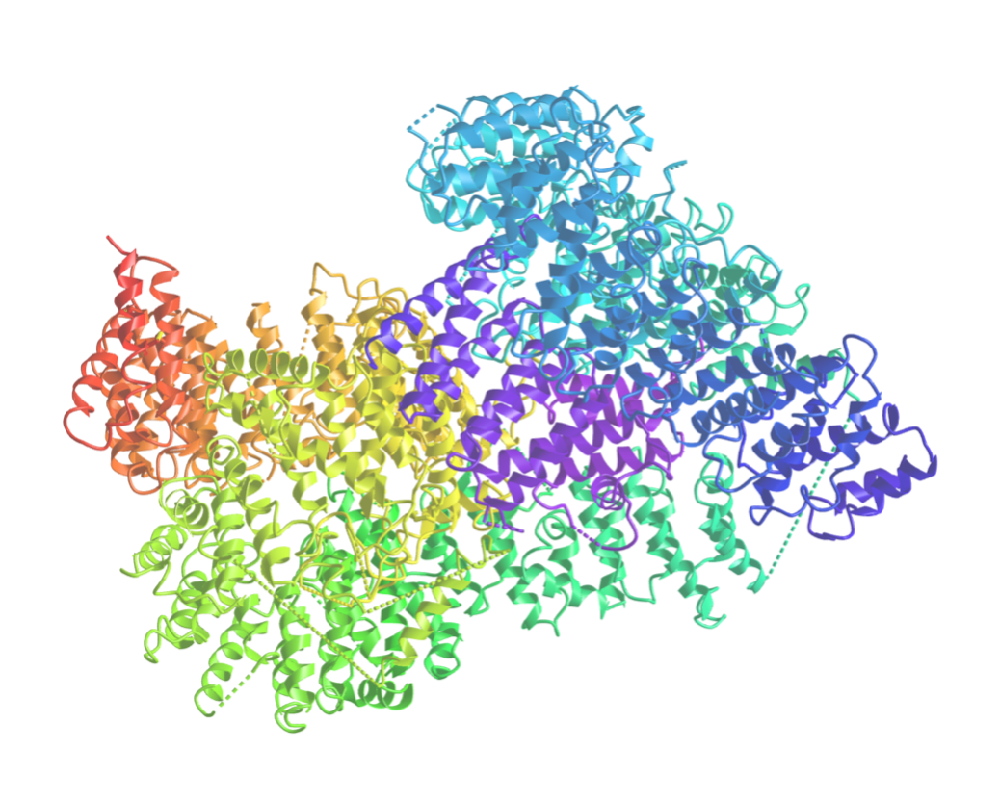
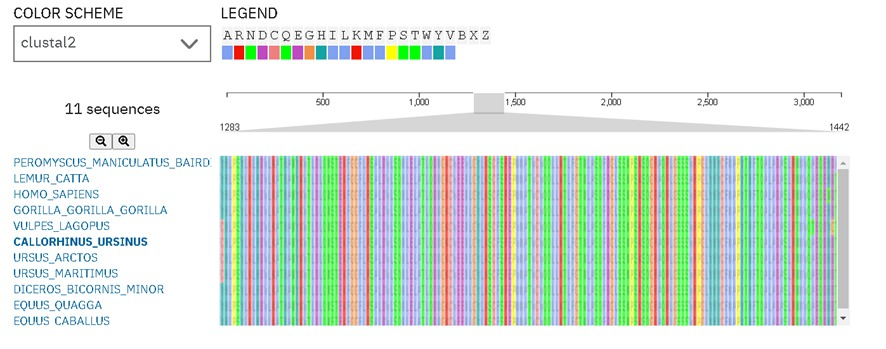
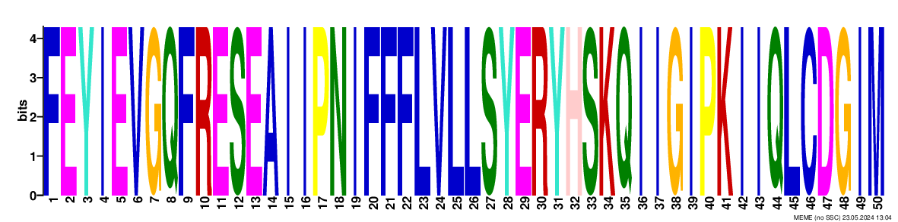
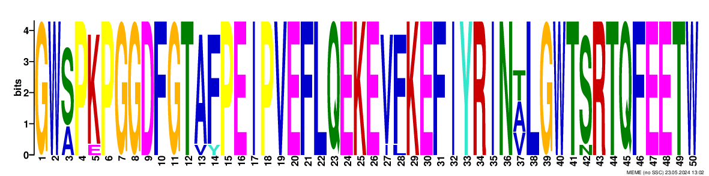
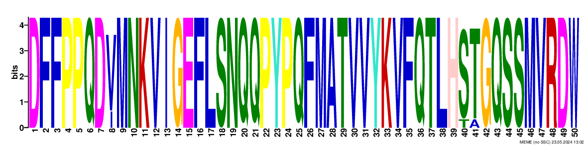
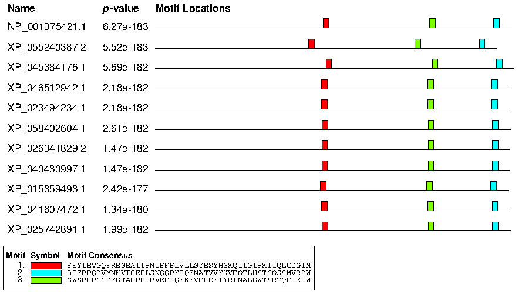
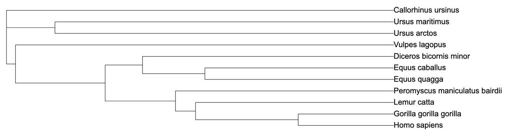

Gene e Proteína
O gene HTT é o gene que codifica a proteína huntingtina. A huntingtina é uma proteína que desempenha um papel crucial no desenvolvimento e na função do sistema nervoso, particularmente nas regiões do cérebro. O gene HTT está localizado no quarto cromossoma humano e é conhecido por estar associado à doença de Huntington(DH), uma doença neurodegenerativa hereditária progressiva e fatal.
A DH é causada por uma mutação no gene HTT, caracterizada por uma expansão anormal do trinucleotídeo CAG (citosina-adenina-guanina) na região codificadora do gene. Além da doença de Huntington, pesquisas também sugeriram possíveis associações do gene HTT com outras condições neurológicas.
Por exemplo:
Coreia de Huntington Juvenil (JHD): JHD é uma forma rara de DH que se manifesta em crianças e adolescentes. Também é causada por uma mutação no gene HTT, resultando em uma expansão do trinucleotídeo CAG.
Domínios
A proteína huntingtina (HTT) não possui um único domínio claramente definido como alguns outras proteínas, mas possui várias regiões que são importantes para sua função e interação com outras proteínas. No entanto, há algumas características e regiões notáveis na estrutura da huntingtina:Diferente da Huntingtin-interacting protein 1 (HIP1), que tem domínios bem definidos como ANTH, coiled-coil e talin-like, a huntingtina é uma proteína muito grande e complexa com muitas regiões que mediam interações com outras proteínas, mas que não são sempre categorizadas como domínios estruturais únicos.
Homólogos Selecionados
Os homólogos foram selecionados de forma a ser obtida uma maior diversidade de espécies, mantendo na mesma um elevado grau de semelhança. As conclusões serão adaptadas de acordo com este crítério.
NP_001375421.1 - Homo sapiens
XP_055240387.2 - Gorila
XP_045384176.1 - Lemur catta
XP_046512942.1 - Equus quagga
XP_023494234.1 - Equus caballus
XP_058402604.1 - Diceros bicornis minor
XP_026341829.2 - Ursus arctos
XP_040480997.1 - Ursus maritimus
XP_015859498.1 - Peromyscus maniculatus bairdii
XP_041607472.1 - Vulpes lagopus
XP_025742891.1 - Callorhinus ursinus
MSA (Alinhamento Múltiplo de Sequências)
Como é possível ver na figura 1, várias partes da sequência estão bem conservadas e mantiveram-se constantes, sem muitas alterações. Isto deve-se ao facto da huntingtina ter certas funções essenciais para a sobrevivência do indivíduo, como o transporte vesicular e a manutenção celular, que, se fossem alterados, os seres vivos com essas características alteradas não iriam ser capazes de sobreviver em um meio natural. Estas secções que contêm uma função específica e uma estrutura conservada, são designadas domínios, que permitem que os cientistas prevejam a função de novas proteínas com base na presença de domínios conhecidos e ajudam a entender como proteínas diferentes podem evoluir novas funções por meio da recombinação de domínios existentes. A figura 1 é um exemplo de um domínio da huntingtina.
No entanto, algumas partes da sequência apresentam algumas divergências relativamente mínimas, como é o caso da figura 2, ou até mesmo diferenças consideráveis quer na sequência dos aminoácidos quer no tamanho da mesma (figura 3), devido às diferentes características do meio em que estas espécies se encontram (melhor explicado nas implicações evolutivas).
De um ponto de vista geral, esta proteína tem a sua estrutura maioritariamente conservada e é bastante similar entre as espécies em que a proteína foi estudada. Isto também prova que as pequenas diferenças entre as sequências são suficientes para alterar completamente o efeito da proteína no organismo, como é o caso de os seres humanos serem os únicos animais que conseguem desenvolver a Doença de Huntington, devido à nossa estrutura da huntingtina.
Motifs
   Os motifs são sequências conservadas de aminoácidos que indicam regiões funcionalmente importantes. Essas regiões estão envolvidas em funções específicas da proteína, como interação com outras proteínas, ligação a DNA ou RNA, e desempenhar um papel estrutural crucial. A presença destes motifs em locais específicos sugere que estas regiões são essenciais para a função e estabilidade da proteína. A mutação que causa a doença de Huntington interfere nestes motifs, levando à disfunção e neurodegeneração.
Árvore Filogenética
Para analisar a árvore filogenética apresentada, vamos detalhar as relações evolutivas entre as diferentes espécies listadas. A árvore filogenética é uma representação visual das relações evolutivas entre várias espécies com base em características compartilhadas derivadas de um ancestral comum.
Análise Detalhada da Árvore Filogenética
Calorhinus ursinus (Lobo-marinho-do-norte)
Ursus maritimus (Urso-polar)
Ursus arctos (Urso-pardo)
Vulpes lagopus (Raposa-do-ártico)
Diceros bicornis minor (Rinoceronte-negro)
Equus caballus (Cavalo)
Equus quagga (Zebra)
Peromyscus maniculatus bairdii (Rato-do-campo)
Lemur catta (Lémur-de-cauda-anelada)
Gorilla gorilla gorilla (Gorila-ocidental-das-terras-baixas)
Homo sapiens (Ser humano)
Esta árvore filogenética da huntingtina em várias espécies de mamíferos fornece-nos muita informação importante não só para o estudo do gene HTT e da respetiva proteína, mas também sobre a Doença de Huntington.
Verificamos que quanto maior a proximidade entre as espécies, mais idênticas são as sequências de proteínas homólogas, isto é, as espécies que são da mesma ordem, família ou até mesmo género, apresentam um maior número de semelhanças entre as suas sequências de aminoácidos que formam a huntingtina, como é o caso do urso-pardo (Ursus arctos) e do urso polar (Ursus maritimus) como também da zebra (Equus quagga) e do cavalo (Equus caballus).
Também é possível estabelecer uma ligação entre o tipo de alimentação das espécies e as similaridades entre os homólogos das mesmas. As sequências mais semelhantes com a huntingtina humana (Homo sapiens) são as do Gorilla gorilla gorilla (gorila), Lemur catta (lémure) e Peromyscus maniculatus bairdii (rato). Todas estas espécies, incluindo os humanos, são omnívoras e provêm de um nó interno comum exclusivo. Continuando a exploração da árvore, o grupo de mamíferos mais idêntico ao do ser humano excluindo os seres omnívoros são Equus quagga (zebra), Equus caballus (cavalo) e Diceros bicornis minor (rinoceronte), todas espécies herbívoras. Para finalizar, os mamíferos mais distantes dos humanos nesta árvore são os seres carnívoros, fazendo parte deste grupo Vulpes lagopus (raposa-do-ártico), Ursus arctos (urso-pardo), Ursus maritimus (urso-polar) e Callorhinus ursinus (foca).
Metodologia
Este tópico é referente aos métodos que usamos para obter os resultados expostos ao longo do trabalho.
- Avaliamos as proteínas possíveis no BLAST e escolhemos a HTT. Com essa informação chegamos à proteína (Huntingtina).
- Utilizamos o NCBI para obter uma estrutura 3D da proteína.
- Os motifs foram encontrados no site MEME na aba “Motif Discovery”. Utilizamos as opções default, tirando na opção “Input the primary sequences” em que escolhemos a opção “Type in sequence” e colocamos a sequência da proteína referida anteriormente em formato FASTA, e na opção “Select the site distribution” em que escolhemos a opção “Any number of repeticions (anr)”.
- Na escolha das espécies fomos a cada uma delas e retiramos a sequência em formato FASTA para um ficheiro “sequencias.fasta”.
- Para o Alinhamento de sequências utilizamos o Clustal Omega MSA e utilizamos as definições: Protein, introduzimos o ficheiro sequencias.fasta, o output format “ClustalW with charater counts”. Aproveitamos o output para obter o ficheiro da árvore filogenética
- Na criação da primeira árvore que serviu de base para tirar conclusões utilizamos o iTol e introduzimos o ficheiro anteriormente retirado do Clustal Omega MAS. Para visualizar a árvore apenas mudamos nas “Branch Options” a configuração “...” para “--- “ e as “Dashed lines” para 1 px .
Ficheiros
Todos os ficheiros que foram usados no trabalho podem ser encontrados nesta secção
Árvore_Filogenética_Img Árvore_filogenética_File Motif_1 Motif_2 Motif_3 Motif_Location MSA_1 MSA_2 MSA_3 Proteína Sequências_Nomeadas{kind=link}
{kind=link}
{kind=link}
{kind=link}
{kind=link}
{kind=link}
{kind=link}
{kind=link}
{kind=link}